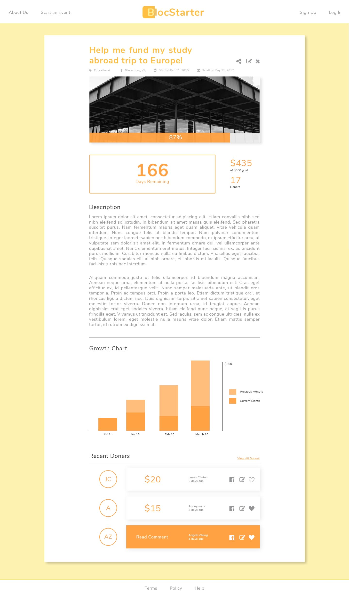
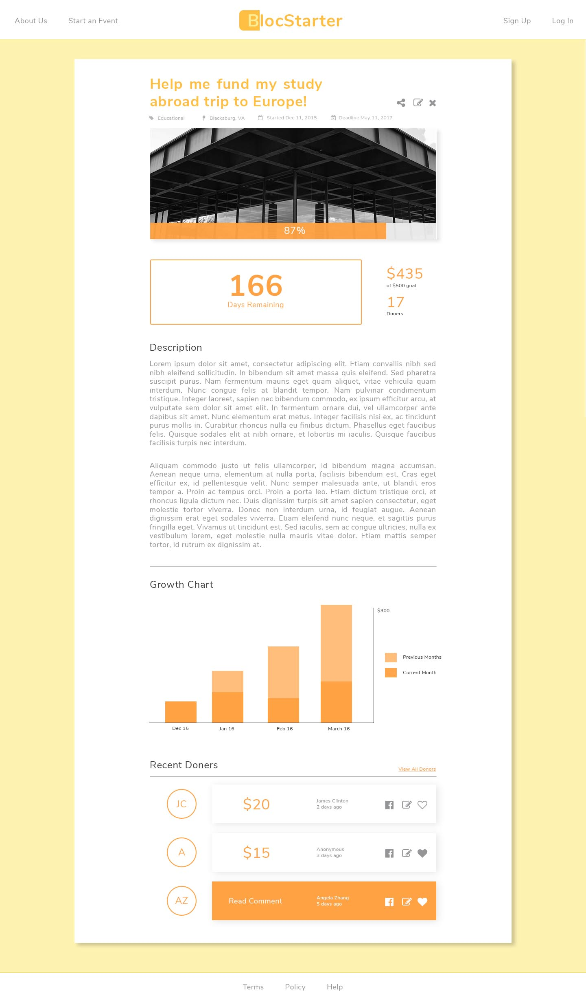

Bloc Starter
Support our future by supporting their education.
Theme
I did not aim for a sense of high end fanciness when I designed Bloc Starter. I am not trying to create another Kick Starter where people crowdfund their new ideas. Rather, Bloc Starter is for someone to start off an education, start off their study abroad programs or their thesis. The idea really came from being in architecture school where most of the students were broke and the rest are really rich. (I personally believe that architecture students are even poorer than the average college student considering the cost of not only text books, but also the cost of design softwares, studio supplies and one whole year of extra tuition that some may argue is not necessary.) The main focus of my design was to create a soft and cozy website achived by rounded fonts with soft yellows.
Design
Most of my projects have at least one aspect that is a proposed new idea or a new way to present things that is different than the conventional. In Bloc Starter, it is the bar graph in the user's project detail page that indicates the funding difference between an older period of time versus a new one.
 
